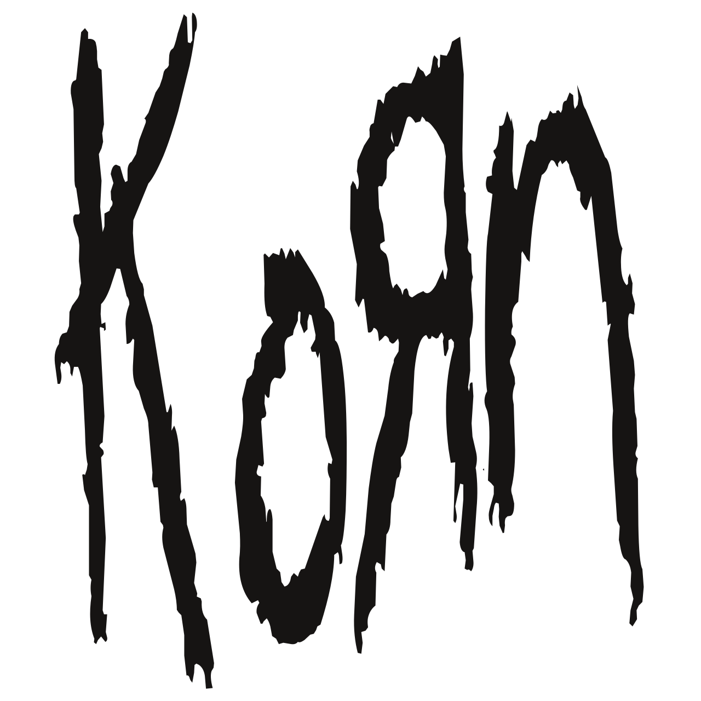
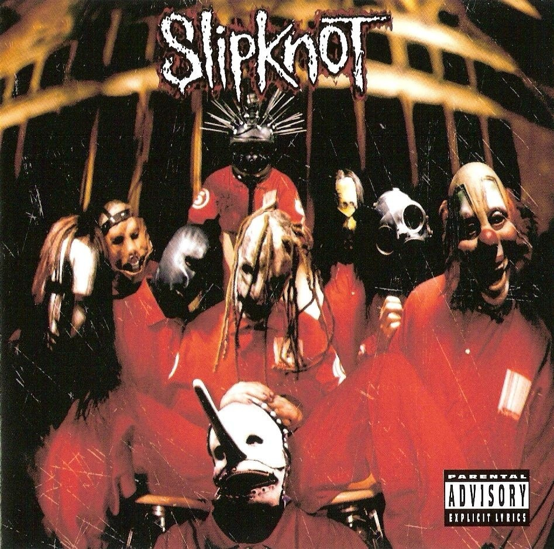
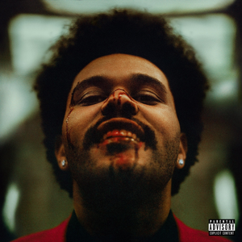

Популярні виконавці
Натисніть на картку виконавця, щоб швидко побачити коротку інформацію.

Korn
Американський гурт, який вважається одним із головних представників жанру ню-метал.

Slipknot
Американський гурт, відомий агресивним звучанням, масками та масштабними концертними шоу.

Depeche Mode
Британський гурт, який вплинув на розвиток синті-попу, електронної та альтернативної музики.

Dua Lipa
Британська поп-співачка, яка поєднує сучасний поп із диско та синті-поп звучанням.

The Weeknd
Канадський співак, який поєднує R&B, поп-музику та атмосферне електронне звучання.
Інформаційний блок
Тут буде показано інформацію про вибраного виконавця.